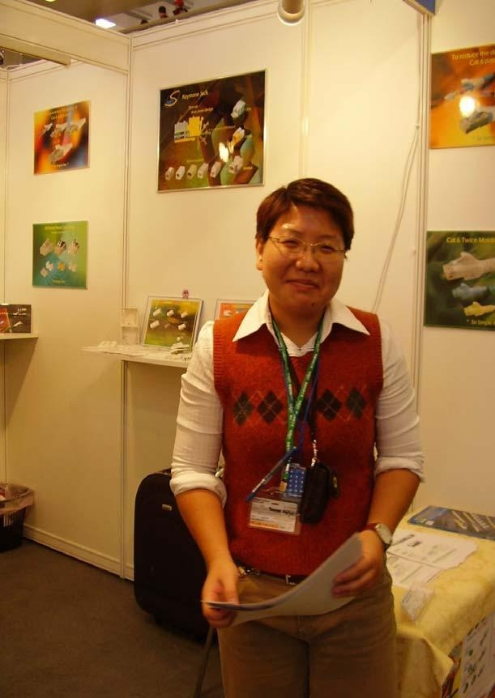
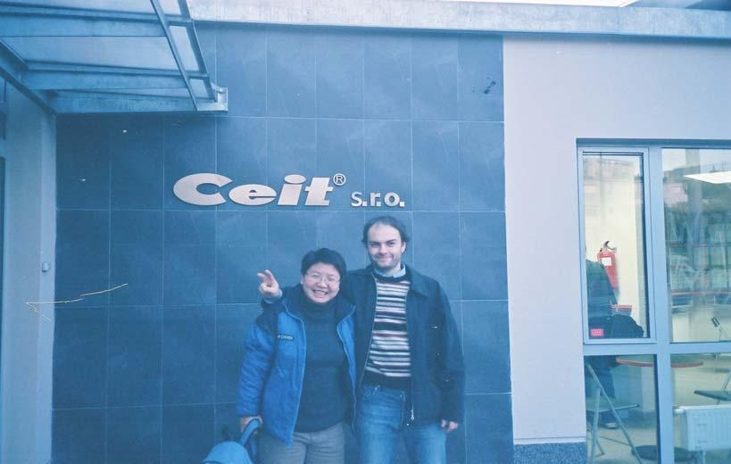
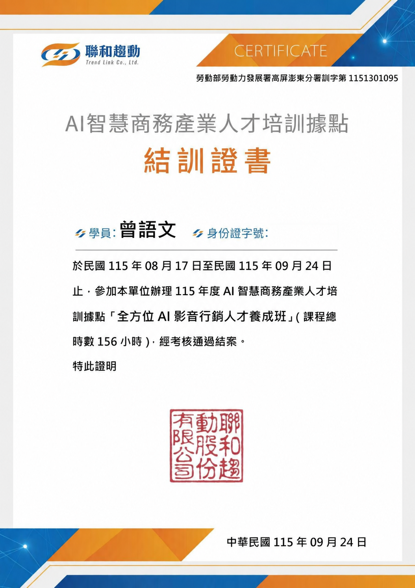

晨達企業股份有限公司 工安
處理工單，協助現場師傅作業與安全事項追蹤。結合安檢經驗與職安訓練，支援現場溝通及工作執行。
國際業務｜旅遊行銷｜安檢與職業安全
求職目標 國際業務專員／國貿業務／客戶關係管理／旅遊行銷與活動企劃
以國際業務與客戶關係為主要職涯方向，具備近 14 年跨領域工作經驗。熟悉英文商務書信、海外客戶開發、進出口流程、產品介紹與現場協調；另以假日副業方式累積旅遊行銷及帶團服務經驗，並具安檢及工安經驗。曾赴加拿大進修英文一年，並參與捷克 INVEX 海外展覽。
處理工單，協助現場師傅作業與安全事項追蹤。結合安檢經驗與職安訓練，支援現場溝通及工作執行。
執行安檢值勤與現場安全維護，累積 3 年安檢實務經驗；面對不同人員與現場狀況，維持程序一致並即時回應異常。
以假日副業方式推廣旅遊產品、說明行程，並執行帶團與旅客服務。
以假日副業方式執行帶團與旅客服務，協助旅遊產品行銷及客戶溝通。
開發海外客戶、維護既有客戶，執行產品介紹、詢價溝通與追蹤。
處理進出口事務與貿易文件，接觸 PE 伸縮膜進口及塑鋼帶外銷。
| 公司 | 職務 | 重點 | 期間 |
|---|---|---|---|
| 驄豪科技 | 國貿人員 | 客戶開發、足弓墊推廣、中東經銷合約 | 2007/09–2007/12 |
| 訊揚企業 | 國外業務 | 電腦線材、客戶開發、捷克 INVEX | 2005/08–2007/07 |
| 聖傑自動科技 | 貿易專員 | 藍牙耳機與 GPS 支架、客戶開發 | 2004/07–2005/03 |



另可提供：60 秒自我介紹短影音、導遊人員執業證、職安訓練及 AI 影音行銷結訓證書。